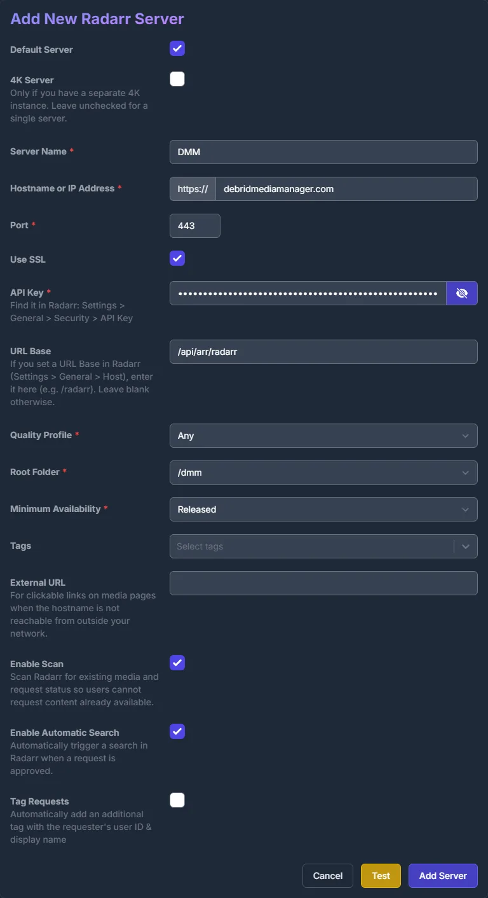
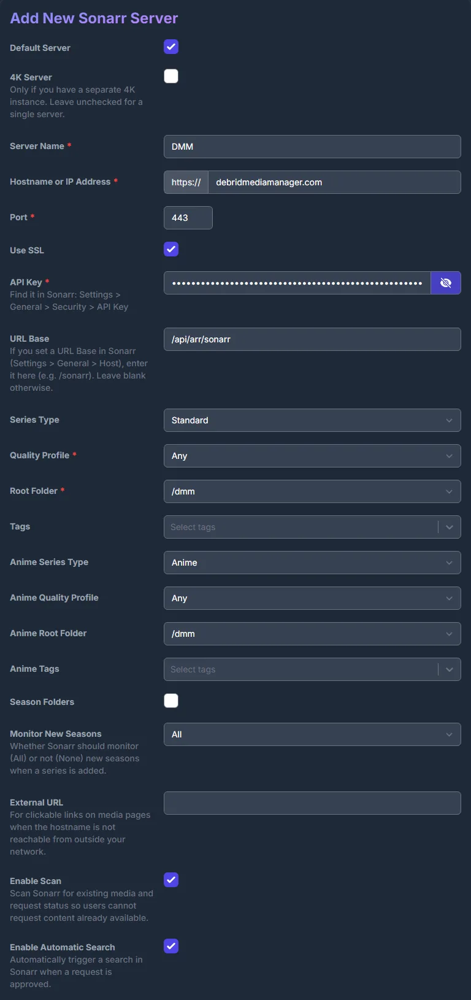
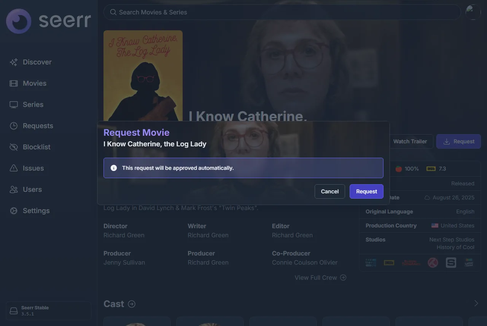
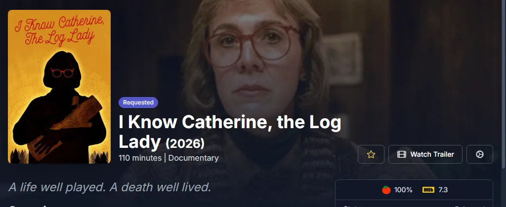
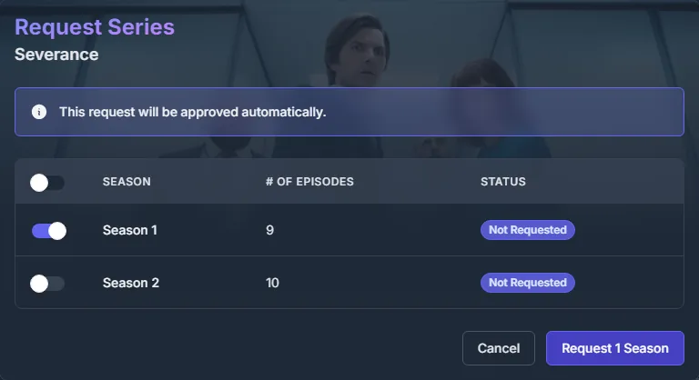
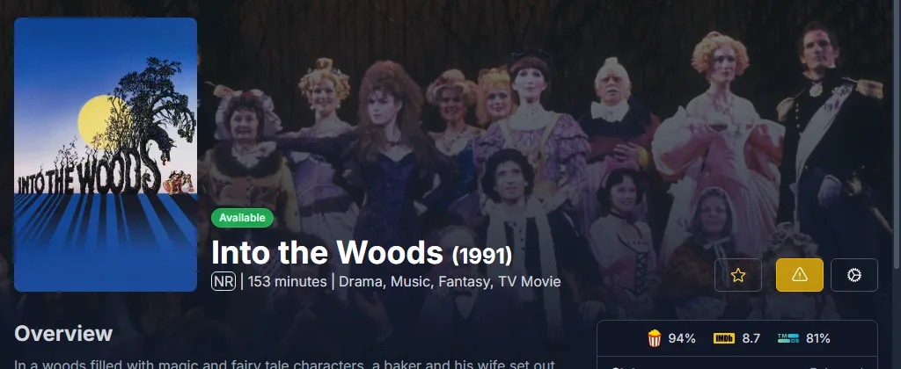

Seerr through DMM
Add DMM to Seerr as its Radarr and Sonarr. Every request approved in Seerr then lands on your DMM wanted list, and your zurg fetches it. There is no real Radarr or Sonarr to run, and Seerr only has to reach debridmediamanager.com, not your zurg. Overseerr and Jellyseerr work the same way.
It is for sponsors: Seerr signs in to DMM with your DMM API key.
What you need
-
zurg reading your wanted list:
dmm_api_keyinconfig.yml, as set up in Fetch what you want from DMM. -
Seerr set up with your Plex or Jellyfin server. Seerr learns from it which episodes you already have.
Add DMM as Radarr
In Seerr, open Settings → Services and press Add Radarr Server. Fill it in like this:
Press Test. When it connects, the two lists below fill in: pick Any for Quality Profile and /dmm for Root Folder. Leave Minimum Availability as it is, tick Enable Scan, and press Add Server.

If Test fails, check the key: it is the one on DMM's Settings page. DMM also refuses it once your sponsorship has lapsed.
Add DMM as Sonarr
Press Add Sonarr Server and fill it in the same way, with URL Base /api/arr/sonarr.
After Test, pick Any and /dmm for both the normal and the anime profile and root
folder, tick Enable Scan, and press Add Server.

Requesting
Request as usual. An approved film goes on your wanted list:


For a show, pick the seasons you want. Those seasons go on your list, and a later request for more seasons adds them. To follow the whole show, new seasons included, press Want all seasons on its DMM page.

Your wanted list shows each title within a few seconds, and zurg picks it up the next time it reads the list, within a minute.
What Seerr shows
Seerr reads DMM's list once a day, at its Radarr Scan and Sonarr Scan jobs. To run them now, open Settings → Jobs & Cache and press Run Now next to each.
-
A film zurg has fetched shows as Available.

-
A show stays Processing until its episodes reach your Plex or Jellyfin library and Seerr's scan of that server finds them. DMM does not know which episodes zurg holds.
Removing a title
Open the title in Seerr, press the gear button and then Remove from Radarr (or Remove from Sonarr). That takes it off your wanted list. What zurg already fetched stays in your library. Open in Radarr next to it opens the title on DMM.
Seerr through DMM or zurg's own Seerr source
zurg can also read Seerr itself, with a seerr source.
Use one of the two, not both:
-
Through DMM, Seerr only needs to reach the internet, the requests show on your wanted list next to what you added with Want, and Seerr's daily scan marks the films zurg fetched as available.
-
zurg's own source treats a 4K request apart from a 1080p one, but zurg has to be able to reach Seerr.